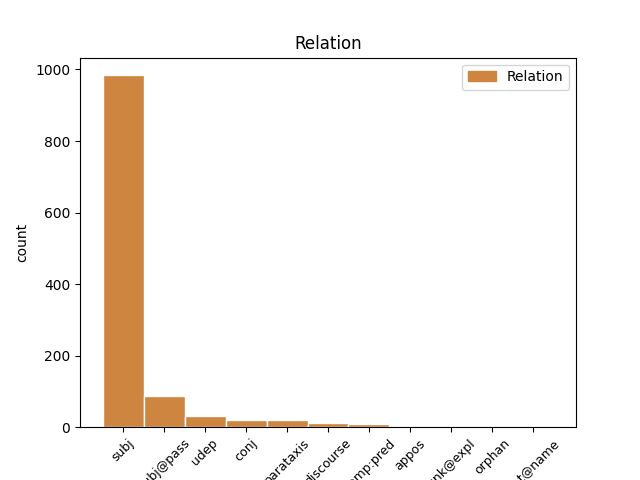
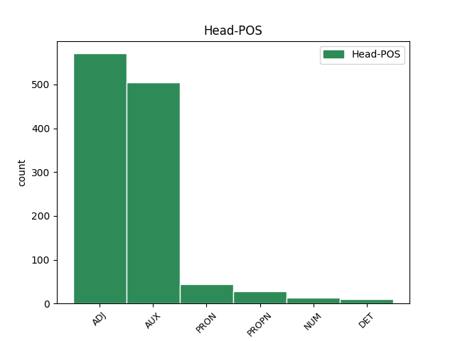
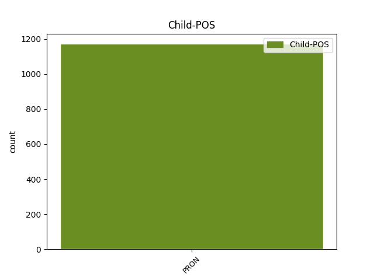

Distribution of features within this leaf



Agreement Rules sorted by frequency.
- When the dependent token is the subject(subj) of the head token, and the head token is ADJ and the dependent token is PRON.
1 - _ _ _ _ 0 _ _ _
2 Но _ _ _ _ 0 _ _ _
3 раз _ _ _ _ 0 _ _ _
4 ее _ _ _ _ 0 _ _ _
5 забросили _ _ _ _ 0 _ _ _
6 , _ _ _ _ 0 _ _ _
7 значит _ _ _ _ 0 _ _ _
8 , _ _ _ _ 0 _ _ _
9 она она PRON _ Case=Nom|Gender=Fem|Number=Sing|Person=3 11 subj _ _
10 не _ _ _ _ 0 _ _ _
11 нужна нужный ADJ _ Degree=Pos|Gender=Fem|Number=Sing|Variant=Short 0 _ _ _
12 ? _ _ _ _ 0 _ _ _
1 Оно оно PRON _ Case=Nom|Gender=Neut|Number=Sing|Person=3 2 subj _ _
2 было быть AUX _ Aspect=Imp|Gender=Neut|Mood=Ind|Number=Sing|Tense=Past|VerbForm=Fin|Voice=Act 0 _ _ _
3 неправдоподобно _ _ _ _ 0 _ _ _
4 тихим _ _ _ _ 0 _ _ _
5 , _ _ _ _ 0 _ _ _
6 это _ _ _ _ 0 _ _ _
7 стадо _ _ _ _ 0 _ _ _
8 ; _ _ _ _ 0 _ _ _
9 коровы _ _ _ _ 0 _ _ _
10 лежали _ _ _ _ 0 _ _ _
11 , _ _ _ _ 0 _ _ _
12 словно _ _ _ _ 0 _ _ _
13 затаясь _ _ _ _ 0 _ _ _
14 , _ _ _ _ 0 _ _ _
15 чем-то _ _ _ _ 0 _ _ _
16 опасным _ _ _ _ 0 _ _ _
17 веяло _ _ _ _ 0 _ _ _
18 от _ _ _ _ 0 _ _ _
19 их _ _ _ _ 0 _ _ _
20 бесшумности _ _ _ _ 0 _ _ _
21 . _ _ _ _ 0 _ _ _
1 Никогда _ _ _ _ 0 _ _ _
2 не _ _ _ _ 0 _ _ _
3 был быть AUX _ Aspect=Imp|Gender=Masc|Mood=Ind|Number=Sing|Tense=Past|VerbForm=Fin|Voice=Act 0 _ _ _
4 он он PRON _ Case=Nom|Gender=Masc|Number=Sing|Person=3 3 subj@pass _ _
5 так _ _ _ _ 0 _ _ _
6 загружен _ _ _ _ 0 _ _ _
7 и _ _ _ _ 0 _ _ _
8 обременен _ _ _ _ 0 _ _ _
9 делами _ _ _ _ 0 _ _ _
10 , _ _ _ _ 0 _ _ _
11 как _ _ _ _ 0 _ _ _
12 в _ _ _ _ 0 _ _ _
13 годы _ _ _ _ 0 _ _ _
14 детства _ _ _ _ 0 _ _ _
15 . _ _ _ _ 0 _ _ _
1 Но _ _ _ _ 0 _ _ _
2 это это PRON _ Animacy=Inan|Case=Nom|Gender=Neut|Number=Sing 5 subj _ _
3 еще _ _ _ _ 0 _ _ _
4 не _ _ _ _ 0 _ _ _
5 все все PRON _ Animacy=Inan|Case=Nom|Gender=Neut|Number=Sing 0 _ _ _
6 - _ _ _ _ 0 _ _ _
7 морская _ _ _ _ 0 _ _ _
8 вода _ _ _ _ 0 _ _ _
9 содержит _ _ _ _ 0 _ _ _
10 практически _ _ _ _ 0 _ _ _
11 неисчерпаемые _ _ _ _ 0 _ _ _
12 запасы _ _ _ _ 0 _ _ _
13 редких _ _ _ _ 0 _ _ _
14 металлов _ _ _ _ 0 _ _ _
15 . _ _ _ _ 0 _ _ _
1 Не _ _ _ _ 0 _ _ _
2 только _ _ _ _ 0 _ _ _
3 то то PRON _ Animacy=Inan|Case=Nom|Gender=Neut|Number=Sing 0 _ _ _
4 , _ _ _ _ 0 _ _ _
5 что _ _ _ _ 0 _ _ _
6 летает _ _ _ _ 0 _ _ _
7 , _ _ _ _ 0 _ _ _
8 но _ _ _ _ 0 _ _ _
9 и _ _ _ _ 0 _ _ _
10 все все PRON _ Animacy=Inan|Case=Nom|Gender=Neut|Number=Sing 3 conj _ SpaceAfter=No
11 , _ _ _ _ 0 _ _ _
12 что _ _ _ _ 0 _ _ _
13 движется _ _ _ _ 0 _ _ _
14 , _ _ _ _ 0 _ _ _
15 должно _ _ _ _ 0 _ _ _
16 быть _ _ _ _ 0 _ _ _
17 легким _ _ _ _ 0 _ _ _
18 , _ _ _ _ 0 _ _ _
19 нержавеющим _ _ _ _ 0 _ _ _
20 , _ _ _ _ 0 _ _ _
21 экономичным _ _ _ _ 0 _ _ _
22 и _ _ _ _ 0 _ _ _
23 обходиться _ _ _ _ 0 _ _ _
24 без _ _ _ _ 0 _ _ _
25 ремонта _ _ _ _ 0 _ _ _
26 тысячи _ _ _ _ 0 _ _ _
27 и _ _ _ _ 0 _ _ _
28 десятки _ _ _ _ 0 _ _ _
29 тысяч _ _ _ _ 0 _ _ _
30 часов _ _ _ _ 0 _ _ _
31 . _ _ _ _ 0 _ _ _
1 Более _ _ _ _ 0 _ _ _
2 того то PRON _ Animacy=Inan|Case=Gen|Gender=Neut|Number=Sing 4 udep _ SpaceAfter=No
3 , _ _ _ _ 0 _ _ _
4 похоже похожий ADJ _ Degree=Pos|Gender=Neut|Number=Sing|Variant=Short 0 _ _ _
5 , _ _ _ _ 0 _ _ _
6 что _ _ _ _ 0 _ _ _
7 место _ _ _ _ 0 _ _ _
8 корыстных _ _ _ _ 0 _ _ _
9 ведомственных _ _ _ _ 0 _ _ _
10 амбиций _ _ _ _ 0 _ _ _
11 занимает _ _ _ _ 0 _ _ _
12 не _ _ _ _ 0 _ _ _
13 свободная _ _ _ _ 0 _ _ _
14 добротная _ _ _ _ 0 _ _ _
15 научная _ _ _ _ 0 _ _ _
16 экспертиза _ _ _ _ 0 _ _ _
17 , _ _ _ _ 0 _ _ _
18 а _ _ _ _ 0 _ _ _
19 мифы _ _ _ _ 0 _ _ _
20 обыденного _ _ _ _ 0 _ _ _
21 сознания _ _ _ _ 0 _ _ _
22 . _ _ _ _ 0 _ _ _
1 Мне _ _ _ _ 0 _ _ _
2 было быть AUX _ Aspect=Imp|Gender=Neut|Mood=Ind|Number=Sing|Tense=Past|VerbForm=Fin|Voice=Act 0 _ _ _
3 все все PRON _ Animacy=Inan|Case=Nom|Gender=Neut|Number=Sing 2 comp:pred _ _
4 равно _ _ _ _ 0 _ _ _
5 , _ _ _ _ 0 _ _ _
6 где _ _ _ _ 0 _ _ _
7 работать _ _ _ _ 0 _ _ _
8 , _ _ _ _ 0 _ _ _
9 но _ _ _ _ 0 _ _ _
10 что _ _ _ _ 0 _ _ _
11 я _ _ _ _ 0 _ _ _
12 могла _ _ _ _ 0 _ _ _
13 , _ _ _ _ 0 _ _ _
14 что _ _ _ _ 0 _ _ _
15 я _ _ _ _ 0 _ _ _
16 умела _ _ _ _ 0 _ _ _
17 ? _ _ _ _ 0 _ _ _
1 Сюсюкать _ _ _ _ 0 _ _ _
2 потому _ _ _ _ 0 _ _ _
3 что _ _ _ _ 0 _ _ _
4 она она PRON _ Case=Nom|Gender=Fem|Number=Sing|Person=3 6 subj _ _
5 именно _ _ _ _ 0 _ _ _
6 твоя твой DET _ Case=Nom|Gender=Fem|Number=Sing 0 _ _ _
7 , _ _ _ _ 0 _ _ _
8 - _ _ _ _ 0 _ _ _
9 тебе _ _ _ _ 0 _ _ _
10 ведь _ _ _ _ 0 _ _ _
11 не _ _ _ _ 0 _ _ _
12 этого _ _ _ _ 0 _ _ _
13 надо _ _ _ _ 0 _ _ _
14 . _ _ _ _ 0 _ _ _
1 К _ _ _ _ 0 _ _ _
2 депутатской _ _ _ _ 0 _ _ _
3 деятельности _ _ _ _ 0 _ _ _
4 он он PRON _ Case=Nom|Gender=Masc|Number=Sing|Person=3 5 subj@pass _ _
5 должен должен ADJ _ Degree=Pos|Gender=Masc|Number=Sing|Variant=Short 0 _ _ _
6 быть _ _ _ _ 0 _ _ _
7 подготовлен _ _ _ _ 0 _ _ _
8 всей _ _ _ _ 0 _ _ _
9 своей _ _ _ _ 0 _ _ _
10 предшествующей _ _ _ _ 0 _ _ _
11 работой _ _ _ _ 0 _ _ _
12 : _ _ _ _ 0 _ _ _
13 государственной _ _ _ _ 0 _ _ _
14 , _ _ _ _ 0 _ _ _
15 профессиональной _ _ _ _ 0 _ _ _
16 , _ _ _ _ 0 _ _ _
17 общественной _ _ _ _ 0 _ _ _
18 ( _ _ _ _ 0 _ _ _
19 партийной _ _ _ _ 0 _ _ _
20 , _ _ _ _ 0 _ _ _
21 профсоюзной _ _ _ _ 0 _ _ _
22 и _ _ _ _ 0 _ _ _
23 т. _ _ _ _ 0 _ _ _
24 д _ _ _ _ 0 _ _ _
25 ) _ _ _ _ 0 _ _ _
26 . _ _ _ _ 0 _ _ _
1 Тем то PRON _ Animacy=Inan|Case=Ins|Gender=Neut|Number=Sing 5 discourse _ _
2 не _ _ _ _ 0 _ _ _
3 менее _ _ _ _ 0 _ _ _
4 очень _ _ _ _ 0 _ _ _
5 важно важный ADJ _ Degree=Pos|Gender=Neut|Number=Sing|Variant=Short 0 _ _ _
6 , _ _ _ _ 0 _ _ _
7 что _ _ _ _ 0 _ _ _
8 появился _ _ _ _ 0 _ _ _
9 такой _ _ _ _ 0 _ _ _
10 ориентир _ _ _ _ 0 _ _ _
11 , _ _ _ _ 0 _ _ _
12 ведь _ _ _ _ 0 _ _ _
13 рост _ _ _ _ 0 _ _ _
14 среднего _ _ _ _ 0 _ _ _
15 класса _ _ _ _ 0 _ _ _
16 полностью _ _ _ _ 0 _ _ _
17 зависит _ _ _ _ 0 _ _ _
18 от _ _ _ _ 0 _ _ _
19 политики _ _ _ _ 0 _ _ _
20 государства _ _ _ _ 0 _ _ _
21 . _ _ _ _ 0 _ _ _
1 - _ _ _ _ 0 _ _ _
2 В _ _ _ _ 0 _ _ _
3 раздевалке _ _ _ _ 0 _ _ _
4 он он PRON _ Case=Nom|Gender=Masc|Number=Sing|Person=3 5 subj _ _
5 один один NUM _ Case=Nom|Gender=Masc 0 _ _ _
6 из _ _ _ _ 0 _ _ _
7 непререкаемых _ _ _ _ 0 _ _ _
8 авторитетов _ _ _ _ 0 _ _ _
9 , _ _ _ _ 0 _ _ _
10 - _ _ _ _ 0 _ _ _
11 говорит _ _ _ _ 0 _ _ _
12 Джэмми _ _ _ _ 0 _ _ _
13 Лангенбрюннер _ _ _ _ 0 _ _ _
14 в _ _ _ _ 0 _ _ _
15 своём _ _ _ _ 0 _ _ _
16 интервью _ _ _ _ 0 _ _ _
17 местной _ _ _ _ 0 _ _ _
18 Fort _ _ _ _ 0 _ _ _
19 Worth _ _ _ _ 0 _ _ _
20 Star _ _ _ _ 0 _ _ _
21 - _ _ _ _ 0 _ _ _
22 Telegram _ _ _ _ 0 _ _ _
23 . _ _ _ _ 0 _ _ _
1 Никому _ _ _ _ 0 _ _ _
2 он он PRON _ Case=Nom|Gender=Masc|Number=Sing|Person=3 0 _ _ _
3 не _ _ _ _ 0 _ _ _
4 был _ _ _ _ 0 _ _ _
5 особенно _ _ _ _ 0 _ _ _
6 нужен _ _ _ _ 0 _ _ _
7 - _ _ _ _ 0 _ _ _
8 он он PRON _ Case=Nom|Gender=Masc|Number=Sing|Person=3 2 parataxis _ _
9 как _ _ _ _ 0 _ _ _
10 он _ _ _ _ 0 _ _ _
11 , _ _ _ _ 0 _ _ _
12 лично _ _ _ _ 0 _ _ _
13 как _ _ _ _ 0 _ _ _
14 Гарусов _ _ _ _ 0 _ _ _
15 . _ _ _ _ 0 _ _ _
1 А _ _ _ _ 0 _ _ _
2 он он PRON _ Case=Nom|Gender=Masc|Number=Sing|Person=3 7 subj _ _
3 - _ _ _ _ 0 _ _ _
4 тот _ _ _ _ 0 _ _ _
5 самый _ _ _ _ 0 _ _ _
6 знаменитый _ _ _ _ 0 _ _ _
7 Потапов Потапов PROPN _ Animacy=Anim|Case=Nom|Gender=Masc|Number=Sing 0 _ _ _
8 , _ _ _ _ 0 _ _ _
9 который _ _ _ _ 0 _ _ _
10 расставил _ _ _ _ 0 _ _ _
11 снегозащитные _ _ _ _ 0 _ _ _
12 щиты _ _ _ _ 0 _ _ _
13 вокруг _ _ _ _ 0 _ _ _
14 улиц _ _ _ _ 0 _ _ _
15 Норильска _ _ _ _ 0 _ _ _
16 , _ _ _ _ 0 _ _ _
17 промышленных _ _ _ _ 0 _ _ _
18 объектов _ _ _ _ 0 _ _ _
19 , _ _ _ _ 0 _ _ _
20 каким-то _ _ _ _ 0 _ _ _
21 образом _ _ _ _ 0 _ _ _
22 рассчитав _ _ _ _ 0 _ _ _
23 розу _ _ _ _ 0 _ _ _
24 ветров _ _ _ _ 0 _ _ _
25 , _ _ _ _ 0 _ _ _
26 их _ _ _ _ 0 _ _ _
27 наклон _ _ _ _ 0 _ _ _
28 под _ _ _ _ 0 _ _ _
29 разными _ _ _ _ 0 _ _ _
30 углами _ _ _ _ 0 _ _ _
31 и _ _ _ _ 0 _ _ _
32 т. _ _ _ _ 0 _ _ _
33 д _ _ _ _ 0 _ _ _
34 . _ _ _ _ 0 _ _ _
1 Ну _ _ _ _ 0 _ _ _
2 и _ _ _ _ 0 _ _ _
3 , _ _ _ _ 0 _ _ _
4 конечно _ _ _ _ 0 _ _ _
5 , _ _ _ _ 0 _ _ _
6 сейчас _ _ _ _ 0 _ _ _
7 физики _ _ _ _ 0 _ _ _
8 хотят _ _ _ _ 0 _ _ _
9 изучить _ _ _ _ 0 _ _ _
10 , _ _ _ _ 0 _ _ _
11 что _ _ _ _ 0 _ _ _
12 происходит _ _ _ _ 0 _ _ _
13 дальше _ _ _ _ 0 _ _ _
14 , _ _ _ _ 0 _ _ _
15 и _ _ _ _ 0 _ _ _
16 достоверно _ _ _ _ 0 _ _ _
17 , _ _ _ _ 0 _ _ _
18 к _ _ _ _ 0 _ _ _
19 сожалению _ _ _ _ 0 _ _ _
20 , _ _ _ _ 0 _ _ _
21 пока _ _ _ _ 0 _ _ _
22 не _ _ _ _ 0 _ _ _
23 известно известный ADJ _ Degree=Pos|Gender=Neut|Number=Sing|Variant=Short 0 _ _ _
24 , _ _ _ _ 0 _ _ _
25 то то PRON _ Animacy=Inan|Case=Nom|Gender=Neut|Number=Sing 23 parataxis _ _
26 есть _ _ _ _ 0 _ _ _
27 эксперимент _ _ _ _ 0 _ _ _
28 пока _ _ _ _ 0 _ _ _
29 еще _ _ _ _ 0 _ _ _
30 ничего _ _ _ _ 0 _ _ _
31 не _ _ _ _ 0 _ _ _
32 говорит _ _ _ _ 0 _ _ _
33 . _ _ _ _ 0 _ _ _
1 Нельзя _ _ _ _ 0 _ _ _
2 от _ _ _ _ 0 _ _ _
3 него _ _ _ _ 0 _ _ _
4 таиться _ _ _ _ 0 _ _ _
5 , _ _ _ _ 0 _ _ _
6 черно черный ADJ _ Degree=Pos|Gender=Neut|Number=Sing|Variant=Short 0 _ _ _
7 - _ _ _ _ 0 _ _ _
8 бело _ _ _ _ 0 _ _ _
9 - _ _ _ _ 0 _ _ _
10 всё все PRON _ Animacy=Inan|Case=Acc|Gender=Neut|Number=Sing 6 appos _ _
11 с _ _ _ _ 0 _ _ _
12 мужем _ _ _ _ 0 _ _ _
13 оговаривать _ _ _ _ 0 _ _ _
14 надо _ _ _ _ 0 _ _ _
15 . _ _ _ _ 0 _ _ _
1 Тем то PRON _ Animacy=Inan|Case=Ins|Gender=Neut|Number=Sing 7 discourse _ _
2 не _ _ _ _ 0 _ _ _
3 менее _ _ _ _ 0 _ _ _
4 уникальные _ _ _ _ 0 _ _ _
5 лаковые _ _ _ _ 0 _ _ _
6 панно _ _ _ _ 0 _ _ _
7 было быть AUX _ Aspect=Imp|Gender=Neut|Mood=Ind|Number=Sing|Tense=Past|VerbForm=Fin|Voice=Act 0 _ _ _
8 решено _ _ _ _ 0 _ _ _
9 отреставрировать _ _ _ _ 0 _ _ _
10 . _ _ _ _ 0 _ _ _
1 Глупая _ _ _ _ 0 _ _ _
2 женщина _ _ _ _ 0 _ _ _
3 , _ _ _ _ 0 _ _ _
4 она _ _ _ _ 0 _ _ _
5 тоже _ _ _ _ 0 _ _ _
6 бредет _ _ _ _ 0 _ _ _
7 наугад _ _ _ _ 0 _ _ _
8 , _ _ _ _ 0 _ _ _
9 вытянув _ _ _ _ 0 _ _ _
10 руки _ _ _ _ 0 _ _ _
11 , _ _ _ _ 0 _ _ _
12 обшаривая _ _ _ _ 0 _ _ _
13 выступы _ _ _ _ 0 _ _ _
14 и _ _ _ _ 0 _ _ _
15 расселины _ _ _ _ 0 _ _ _
16 , _ _ _ _ 0 _ _ _
17 спотыкаясь _ _ _ _ 0 _ _ _
18 в _ _ _ _ 0 _ _ _
19 тумане _ _ _ _ 0 _ _ _
20 , _ _ _ _ 0 _ _ _
21 она _ _ _ _ 0 _ _ _
22 вздрагивает _ _ _ _ 0 _ _ _
23 и _ _ _ _ 0 _ _ _
24 ежится _ _ _ _ 0 _ _ _
25 во _ _ _ _ 0 _ _ _
26 сне _ _ _ _ 0 _ _ _
27 , _ _ _ _ 0 _ _ _
28 она _ _ _ _ 0 _ _ _
29 тянется _ _ _ _ 0 _ _ _
30 к _ _ _ _ 0 _ _ _
31 блуждающим _ _ _ _ 0 _ _ _
32 огням _ _ _ _ 0 _ _ _
33 , _ _ _ _ 0 _ _ _
34 ловит _ _ _ _ 0 _ _ _
35 неловкими _ _ _ _ 0 _ _ _
36 пальчиками _ _ _ _ 0 _ _ _
37 отражения _ _ _ _ 0 _ _ _
38 свечей _ _ _ _ 0 _ _ _
39 , _ _ _ _ 0 _ _ _
40 хватает _ _ _ _ 0 _ _ _
41 круги _ _ _ _ 0 _ _ _
42 на _ _ _ _ 0 _ _ _
43 воде _ _ _ _ 0 _ _ _
44 , _ _ _ _ 0 _ _ _
45 бросается _ _ _ _ 0 _ _ _
46 за _ _ _ _ 0 _ _ _
47 тенью _ _ _ _ 0 _ _ _
48 дыма _ _ _ _ 0 _ _ _
49 ; _ _ _ _ 0 _ _ _
50 она _ _ _ _ 0 _ _ _
51 склоняет _ _ _ _ 0 _ _ _
52 голову _ _ _ _ 0 _ _ _
53 на _ _ _ _ 0 _ _ _
54 плечо _ _ _ _ 0 _ _ _
55 , _ _ _ _ 0 _ _ _
56 слушает _ _ _ _ 0 _ _ _
57 шуршание _ _ _ _ 0 _ _ _
58 ветра _ _ _ _ 0 _ _ _
59 и _ _ _ _ 0 _ _ _
60 пыли _ _ _ _ 0 _ _ _
61 , _ _ _ _ 0 _ _ _
62 растерянно _ _ _ _ 0 _ _ _
63 улыбается _ _ _ _ 0 _ _ _
64 , _ _ _ _ 0 _ _ _
65 озирается _ _ _ _ 0 _ _ _
66 - _ _ _ _ 0 _ _ _
67 где _ _ _ _ 0 _ _ _
68 оно оно PRON _ Case=Nom|Gender=Neut|Number=Sing|Person=3 0 _ _ _
69 , _ _ _ _ 0 _ _ _
70 то то PRON _ Animacy=Inan|Case=Nom|Gender=Neut|Number=Sing 68 appos _ SpaceAfter=No
71 , _ _ _ _ 0 _ _ _
72 что _ _ _ _ 0 _ _ _
73 сейчас _ _ _ _ 0 _ _ _
74 промелькнуло _ _ _ _ 0 _ _ _
75 ? _ _ _ _ 0 _ _ _
1 И _ _ _ _ 0 _ _ _
2 совсем _ _ _ _ 0 _ _ _
3 не _ _ _ _ 0 _ _ _
4 прав _ _ _ _ 0 _ _ _
5 Али _ _ _ _ 0 _ _ _
6 , _ _ _ _ 0 _ _ _
7 когда _ _ _ _ 0 _ _ _
8 для _ _ _ _ 0 _ _ _
9 доказательства _ _ _ _ 0 _ _ _
10 другого _ _ _ _ 0 _ _ _
11 тезиса _ _ _ _ 0 _ _ _
12 - _ _ _ _ 0 _ _ _
13 " _ _ _ _ 0 _ _ _
14 подавляющее _ _ _ _ 0 _ _ _
15 большинство _ _ _ _ 0 _ _ _
16 ( _ _ _ _ 0 _ _ _
17 немцев _ _ _ _ 0 _ _ _
18 ) _ _ _ _ 0 _ _ _
19 не _ _ _ _ 0 _ _ _
20 нуждалось _ _ _ _ 0 _ _ _
21 ни _ _ _ _ 0 _ _ _
22 в _ _ _ _ 0 _ _ _
23 каком _ _ _ _ 0 _ _ _
24 надзоре _ _ _ _ 0 _ _ _
25 " _ _ _ _ 0 _ _ _
26 - _ _ _ _ 0 _ _ _
27 приводит _ _ _ _ 0 _ _ _
28 сопоставление _ _ _ _ 0 _ _ _
29 : _ _ _ _ 0 _ _ _
30 в _ _ _ _ 0 _ _ _
31 ГДР _ _ _ _ 0 _ _ _
32 для _ _ _ _ 0 _ _ _
33 контроля _ _ _ _ 0 _ _ _
34 над _ _ _ _ 0 _ _ _
35 17 _ _ _ _ 0 _ _ _
36 миллионами _ _ _ _ 0 _ _ _
37 граждан _ _ _ _ 0 _ _ _
38 было _ _ _ _ 0 _ _ _
39 задействовано _ _ _ _ 0 _ _ _
40 190 _ _ _ _ 0 _ _ _
41 тысяч _ _ _ _ 0 _ _ _
42 штатных _ _ _ _ 0 _ _ _
43 и _ _ _ _ 0 _ _ _
44 столько _ _ _ _ 0 _ _ _
45 же _ _ _ _ 0 _ _ _
46 нештатных _ _ _ _ 0 _ _ _
47 агентов _ _ _ _ 0 _ _ _
48 " _ _ _ _ 0 _ _ _
49 Штази _ _ _ _ 0 _ _ _
50 " _ _ _ _ 0 _ _ _
51 , _ _ _ _ 0 _ _ _
52 а _ _ _ _ 0 _ _ _
53 гестапо _ _ _ _ 0 _ _ _
54 в _ _ _ _ 0 _ _ _
55 1937 _ _ _ _ 0 _ _ _
56 г. _ _ _ _ 0 _ _ _
57 насчитывало _ _ _ _ 0 _ _ _
58 лишь _ _ _ _ 0 _ _ _
59 7 _ _ _ _ 0 _ _ _
60 тысяч _ _ _ _ 0 _ _ _
61 сотрудников _ _ _ _ 0 _ _ _
62 , _ _ _ _ 0 _ _ _
63 включая _ _ _ _ 0 _ _ _
64 секретарш _ _ _ _ 0 _ _ _
65 и _ _ _ _ 0 _ _ _
66 хозяйственников _ _ _ _ 0 _ _ _
67 , _ _ _ _ 0 _ _ _
68 СД СД PROPN _ Animacy=Inan|Case=Nom|Gender=Neut|Number=Sing 0 _ _ _
69 - _ _ _ _ 0 _ _ _
70 и _ _ _ _ 0 _ _ _
71 того то PRON _ Animacy=Inan|Case=Gen|Gender=Neut|Number=Sing 68 orphan _ _
72 меньше _ _ _ _ 0 _ _ _
73 . _ _ _ _ 0 _ _ _
1 Касьянов Касьянов PROPN _ Animacy=Anim|Case=Nom|Gender=Masc|Number=Sing 0 _ _ _
2 , _ _ _ _ 0 _ _ _
3 даже _ _ _ _ 0 _ _ _
4 если _ _ _ _ 0 _ _ _
5 бы _ _ _ _ 0 _ _ _
6 ему _ _ _ _ 0 _ _ _
7 дали _ _ _ _ 0 _ _ _
8 возможность _ _ _ _ 0 _ _ _
9 свободно _ _ _ _ 0 _ _ _
10 выходить _ _ _ _ 0 _ _ _
11 в _ _ _ _ 0 _ _ _
12 эфир _ _ _ _ 0 _ _ _
13 и _ _ _ _ 0 _ _ _
14 дискутировать _ _ _ _ 0 _ _ _
15 , _ _ _ _ 0 _ _ _
16 вряд _ _ _ _ 0 _ _ _
17 ли _ _ _ _ 0 _ _ _
18 бы _ _ _ _ 0 _ _ _
19 он он PRON _ Case=Nom|Gender=Masc|Number=Sing|Person=3 1 appos _ _
20 набрал _ _ _ _ 0 _ _ _
21 больше _ _ _ _ 0 _ _ _
22 семи _ _ _ _ 0 _ _ _
23 процентов _ _ _ _ 0 _ _ _
24 . _ _ _ _ 0 _ _ _
1 Но _ _ _ _ 0 _ _ _
2 , _ _ _ _ 0 _ _ _
3 повторяю _ _ _ _ 0 _ _ _
4 , _ _ _ _ 0 _ _ _
5 Бог Бог PROPN _ Animacy=Anim|Case=Nom|Gender=Masc|Number=Sing 0 _ _ _
6 с _ _ _ _ 0 _ _ _
7 ним он PRON _ Case=Ins|Gender=Masc|Number=Sing|Person=3 5 flat@name _ SpaceAfter=No
8 . _ _ _ _ 0 _ _ _
1 Сразу _ _ _ _ 0 _ _ _
2 сухое сухой ADJ _ Case=Acc|Degree=Pos|Gender=Neut|Number=Sing 0 _ _ _
3 , _ _ _ _ 0 _ _ _
4 а _ _ _ _ 0 _ _ _
5 не _ _ _ _ 0 _ _ _
6 то то PRON _ Animacy=Inan|Case=Nom|Gender=Neut|Number=Sing 2 conj _ SpaceAfter=No
7 , _ _ _ _ 0 _ _ _
8 чтобы _ _ _ _ 0 _ _ _
9 высохло _ _ _ _ 0 _ _ _
10 от _ _ _ _ 0 _ _ _
11 времени _ _ _ _ 0 _ _ _
12 . _ _ _ _ 0 _ _ _
Disagree Examples:
1 Она _ _ _ _ 0 _ _ _
2 опаздывала _ _ _ _ 0 _ _ _
3 , _ _ _ _ 0 _ _ _
4 как _ _ _ _ 0 _ _ _
5 всегда _ _ _ _ 0 _ _ _
6 , _ _ _ _ 0 _ _ _
7 и _ _ _ _ 0 _ _ _
8 он _ _ _ _ 0 _ _ _
9 когда-то _ _ _ _ 0 _ _ _
10 сердился _ _ _ _ 0 _ _ _
11 , _ _ _ _ 0 _ _ _
12 но _ _ _ _ 0 _ _ _
13 теперь _ _ _ _ 0 _ _ _
14 привык _ _ _ _ 0 _ _ _
15 , _ _ _ _ 0 _ _ _
16 потому _ _ _ _ 0 _ _ _
17 что _ _ _ _ 0 _ _ _
18 , _ _ _ _ 0 _ _ _
19 если _ _ _ _ 0 _ _ _
20 припомнить _ _ _ _ 0 _ _ _
21 , _ _ _ _ 0 _ _ _
22 это это PRON _ Animacy=Inan|Case=Nom|Gender=Neut|Number=Sing 26 subj _ SpaceAfter=No
23 , _ _ _ _ 0 _ _ _
24 пожалуй _ _ _ _ 0 _ _ _
25 , _ _ _ _ 0 _ _ _
26 была быть AUX _ Aspect=Imp|Gender=Fem|Mood=Ind|Number=Sing|Tense=Past|VerbForm=Fin|Voice=Act 0 _ _ _
27 единственная _ _ _ _ 0 _ _ _
28 ее _ _ _ _ 0 _ _ _
29 слабость _ _ _ _ 0 _ _ _
30 . _ _ _ _ 0 _ _ _
1 Первая _ _ _ _ 0 _ _ _
2 молодость _ _ _ _ 0 _ _ _
3 прошла _ _ _ _ 0 _ _ _
4 , _ _ _ _ 0 _ _ _
5 то _ _ _ _ 0 _ _ _
6 время _ _ _ _ 0 _ _ _
7 , _ _ _ _ 0 _ _ _
8 когда _ _ _ _ 0 _ _ _
9 все _ _ _ _ 0 _ _ _
10 кажется _ _ _ _ 0 _ _ _
11 простым _ _ _ _ 0 _ _ _
12 и _ _ _ _ 0 _ _ _
13 необязательным _ _ _ _ 0 _ _ _
14 - _ _ _ _ 0 _ _ _
15 дом _ _ _ _ 0 _ _ _
16 , _ _ _ _ 0 _ _ _
17 жена _ _ _ _ 0 _ _ _
18 , _ _ _ _ 0 _ _ _
19 семья _ _ _ _ 0 _ _ _
20 и _ _ _ _ 0 _ _ _
21 тому _ _ _ _ 0 _ _ _
22 подобное _ _ _ _ 0 _ _ _
23 , _ _ _ _ 0 _ _ _
24 - _ _ _ _ 0 _ _ _
25 время _ _ _ _ 0 _ _ _
26 это _ _ _ _ 0 _ _ _
27 миновало _ _ _ _ 0 _ _ _
28 , _ _ _ _ 0 _ _ _
29 уже _ _ _ _ 0 _ _ _
30 тридцать _ _ _ _ 0 _ _ _
31 , _ _ _ _ 0 _ _ _
32 и _ _ _ _ 0 _ _ _
33 когда _ _ _ _ 0 _ _ _
34 знаешь _ _ _ _ 0 _ _ _
35 , _ _ _ _ 0 _ _ _
36 что _ _ _ _ 0 _ _ _
37 вот _ _ _ _ 0 _ _ _
38 она _ _ _ _ 0 _ _ _
39 рядом _ _ _ _ 0 _ _ _
40 с _ _ _ _ 0 _ _ _
41 тобой _ _ _ _ 0 _ _ _
42 и _ _ _ _ 0 _ _ _
43 она _ _ _ _ 0 _ _ _
44 хороша хороший ADJ _ Degree=Pos|Gender=Fem|Number=Sing|Variant=Short 0 _ _ _
45 и _ _ _ _ 0 _ _ _
46 все все PRON _ Animacy=Inan|Case=Nom|Gender=Neut|Number=Sing 44 conj _ _
47 такое _ _ _ _ 0 _ _ _
48 , _ _ _ _ 0 _ _ _
49 а _ _ _ _ 0 _ _ _
50 ты _ _ _ _ 0 _ _ _
51 можешь _ _ _ _ 0 _ _ _
52 ее _ _ _ _ 0 _ _ _
53 всегда _ _ _ _ 0 _ _ _
54 оставить _ _ _ _ 0 _ _ _
55 , _ _ _ _ 0 _ _ _
56 чтобы _ _ _ _ 0 _ _ _
57 так _ _ _ _ 0 _ _ _
58 же _ _ _ _ 0 _ _ _
59 быть _ _ _ _ 0 _ _ _
60 с _ _ _ _ 0 _ _ _
61 другой _ _ _ _ 0 _ _ _
62 , _ _ _ _ 0 _ _ _
63 потому _ _ _ _ 0 _ _ _
64 что _ _ _ _ 0 _ _ _
65 ты _ _ _ _ 0 _ _ _
66 свободен _ _ _ _ 0 _ _ _
67 , _ _ _ _ 0 _ _ _
68 - _ _ _ _ 0 _ _ _
69 в _ _ _ _ 0 _ _ _
70 этом _ _ _ _ 0 _ _ _
71 чувстве _ _ _ _ 0 _ _ _
72 , _ _ _ _ 0 _ _ _
73 собственно _ _ _ _ 0 _ _ _
74 , _ _ _ _ 0 _ _ _
75 нет _ _ _ _ 0 _ _ _
76 никакой _ _ _ _ 0 _ _ _
77 отрады _ _ _ _ 0 _ _ _
78 . _ _ _ _ 0 _ _ _
1 Но _ _ _ _ 0 _ _ _
2 теперь _ _ _ _ 0 _ _ _
3 можно _ _ _ _ 0 _ _ _
4 приобрести _ _ _ _ 0 _ _ _
5 у _ _ _ _ 0 _ _ _
6 фирмы _ _ _ _ 0 _ _ _
7 EDS _ _ _ _ 0 _ _ _
8 - _ _ _ _ 0 _ _ _
9 это это PRON _ Animacy=Inan|Case=Nom|Gender=Neut|Number=Sing 10 subj _ _
10 один один NUM _ Case=Nom|Gender=Masc 0 _ _ _
11 из _ _ _ _ 0 _ _ _
12 разработчиков _ _ _ _ 0 _ _ _
13 виртуальных _ _ _ _ 0 _ _ _
14 манекенов _ _ _ _ 0 _ _ _
15 - _ _ _ _ 0 _ _ _
16 необходимую _ _ _ _ 0 _ _ _
17 для _ _ _ _ 0 _ _ _
18 тестов _ _ _ _ 0 _ _ _
19 базовую _ _ _ _ 0 _ _ _
20 программу _ _ _ _ 0 _ _ _
21 за _ _ _ _ 0 _ _ _
22 " _ _ _ _ 0 _ _ _
23 каких-нибудь _ _ _ _ 0 _ _ _
24 " _ _ _ _ 0 _ _ _
25 $ _ _ _ _ 0 _ _ _
26 25000 _ _ _ _ 0 _ _ _
27 . _ _ _ _ 0 _ _ _
1 Мне _ _ _ _ 0 _ _ _
2 кажется _ _ _ _ 0 _ _ _
3 , _ _ _ _ 0 _ _ _
4 в _ _ _ _ 0 _ _ _
5 кино _ _ _ _ 0 _ _ _
6 есть _ _ _ _ 0 _ _ _
7 одна _ _ _ _ 0 _ _ _
8 только _ _ _ _ 0 _ _ _
9 фигура _ _ _ _ 0 _ _ _
10 , _ _ _ _ 0 _ _ _
11 которая _ _ _ _ 0 _ _ _
12 существует _ _ _ _ 0 _ _ _
13 как-то _ _ _ _ 0 _ _ _
14 очень _ _ _ _ 0 _ _ _
15 основательно _ _ _ _ 0 _ _ _
16 и _ _ _ _ 0 _ _ _
17 в _ _ _ _ 0 _ _ _
18 достаточной _ _ _ _ 0 _ _ _
19 степени _ _ _ _ 0 _ _ _
20 независима _ _ _ _ 0 _ _ _
21 - _ _ _ _ 0 _ _ _
22 это это PRON _ Animacy=Inan|Case=Nom|Gender=Neut|Number=Sing 23 subj _ _
23 Ингмар Ингмар PROPN _ Animacy=Anim|Case=Nom|Gender=Masc|Number=Sing 0 _ _ _
24 Бергман _ _ _ _ 0 _ _ _
25 . _ _ _ _ 0 _ _ _
1 Это это PRON _ Animacy=Inan|Case=Nom|Gender=Neut|Number=Sing 2 subj _ _
2 была быть AUX _ Aspect=Imp|Gender=Fem|Mood=Ind|Number=Sing|Tense=Past|VerbForm=Fin|Voice=Act 0 _ _ _
3 показательная _ _ _ _ 0 _ _ _
4 акция _ _ _ _ 0 _ _ _
5 , _ _ _ _ 0 _ _ _
6 руководство _ _ _ _ 0 _ _ _
7 " _ _ _ _ 0 _ _ _
8 Гринпис _ _ _ _ 0 _ _ _
9 " _ _ _ _ 0 _ _ _
10 таким _ _ _ _ 0 _ _ _
11 образом _ _ _ _ 0 _ _ _
12 хотело _ _ _ _ 0 _ _ _
13 привлечь _ _ _ _ 0 _ _ _
14 внимание _ _ _ _ 0 _ _ _
15 властей _ _ _ _ 0 _ _ _
16 к _ _ _ _ 0 _ _ _
17 проблеме _ _ _ _ 0 _ _ _
18 . _ _ _ _ 0 _ _ _